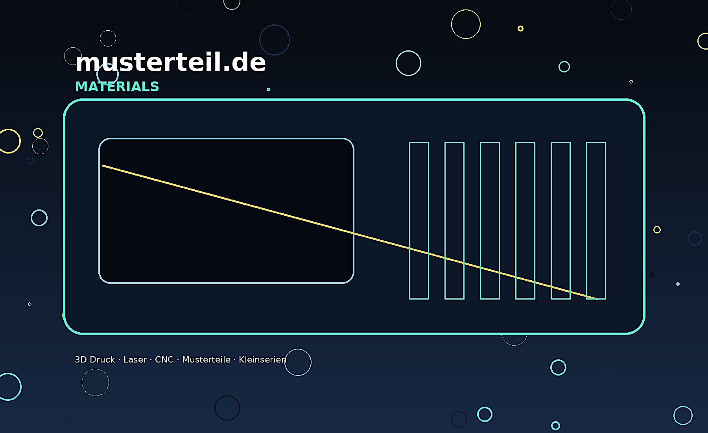

Materialien
Materialauswahl fuer Prototypen und Kleinserien
Die Materialliste ist als Demo vorbereitet und kann spaeter im Adminbereich oder Backend gepflegt werden.
| Material | Verfahren | Typische Anwendung | Status |
|---|---|---|---|
| PLA / PETG | FDM 3D Druck | Modelle, Halter, Gehaeuse | Verfuegbar |
| PA12 | SLS/MJF geplant | Robuste Funktionsteile | Partner/Planung |
| Acrylglas | Laser | Schilder, Displays, Abdeckungen | Verfuegbar |
| Sperrholz/MDF | Laser/CNC | Modelle, Formen, Vorrichtungen | Verfuegbar |
| Aluminium | CNC | Adapter, Frontplatten | Nach Ruecksprache |
